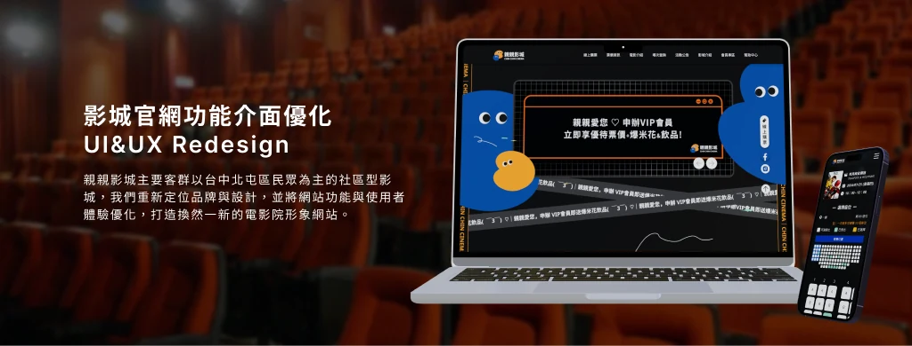
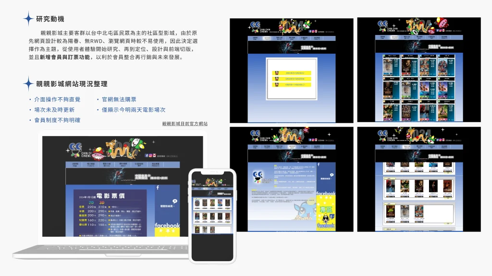
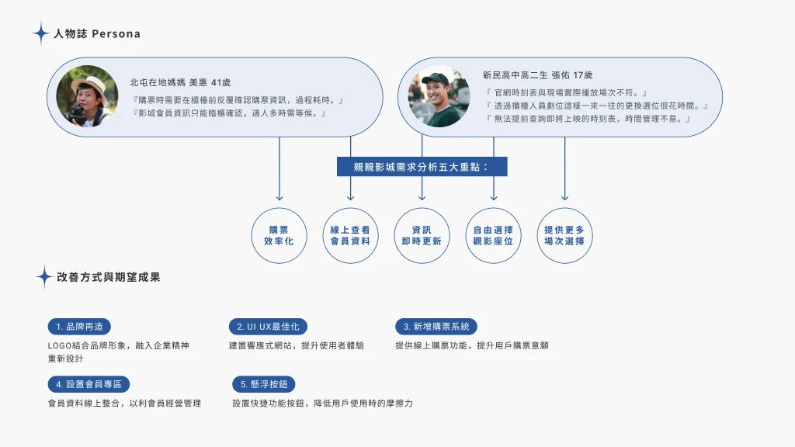
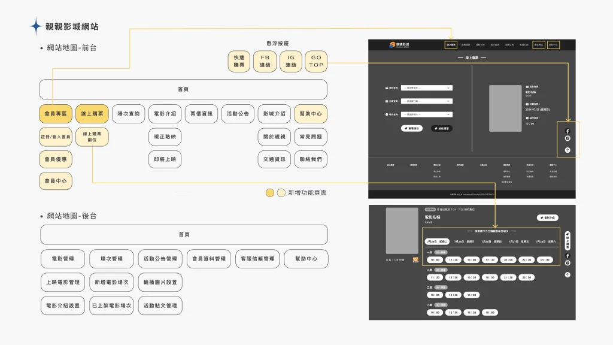
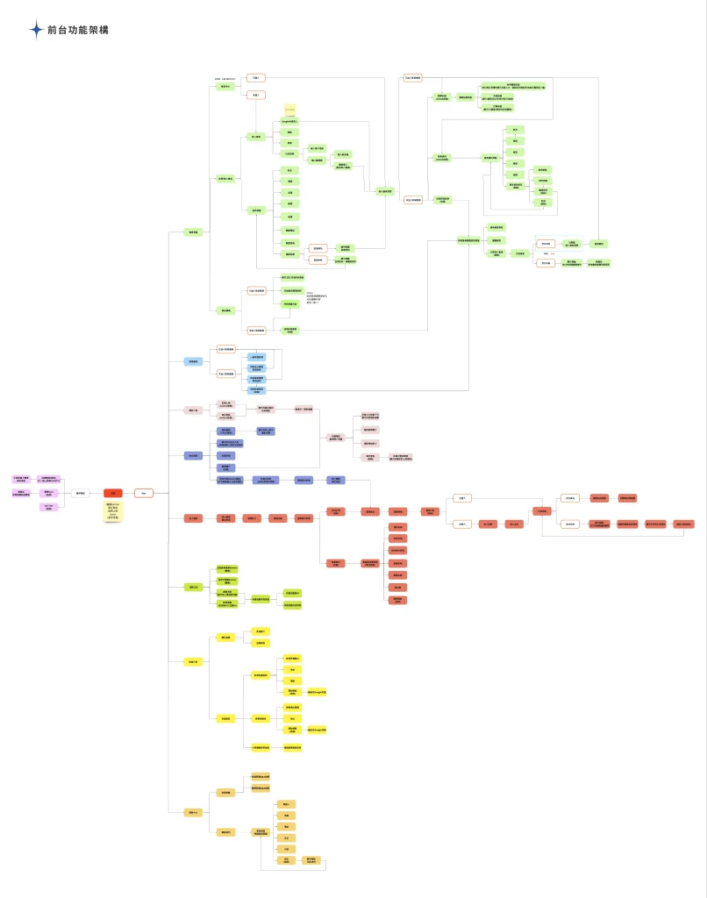
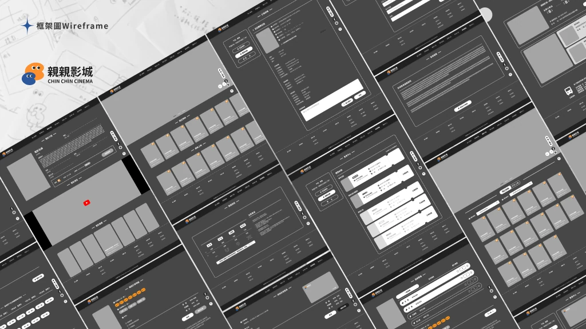
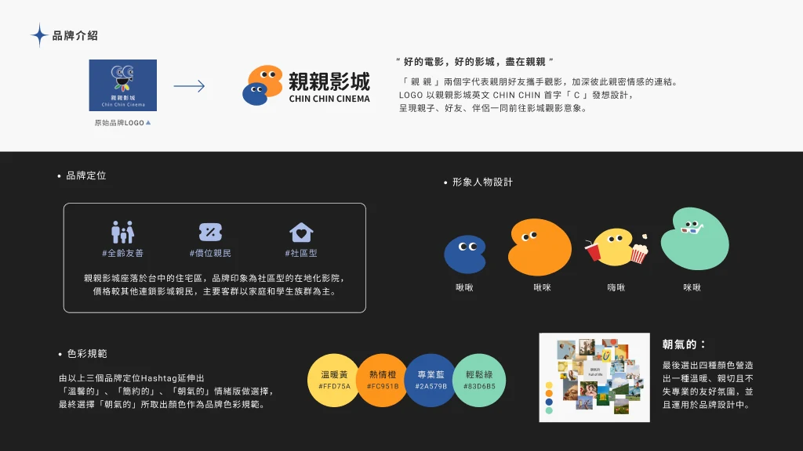

親親影城
購票體驗設計與專案管理
- 專案管理
- 使用者研究
- UI/UX 設計
親親影城是以台中北屯區居民為主的社區型影城，原官網無法線上購票，也沒有響應式版面。這是 5 人團隊的 side project，我擔任 PM 並參與 UI/UX 設計：從使用者研究與網站架構開始，規劃新增會員專區與線上購票，管理約一個月的時程，並在前端完成後負責前台驗收。
在 Behance 查看 ↗
我的工作
負責原網站分析、使用者研究與網站前後台架構，把架構展開成 WBS，標出每一頁的優先程度與流程；也製作時程表與檢核點行事曆，每天更新企劃、設計、前端三條工作線的進度。
設計端參與 Wireframe 與前台 UI；前端完成後，我主責前台驗收，用 QAQC 測試表逐頁比對設計稿並追蹤修正。前端切版由團隊其他成員負責。
從舊官網的問題整理需求
親親影城的主要客群是台中北屯區的居民。原官網設計較陽春、沒有 RWD，在手機上不容易瀏覽。我們先整理官網現況：介面操作不夠直覺、場次沒有即時更新、會員制度不明確，官網也無法購票，只顯示今明兩天的場次。

從 Persona 歸納五項需求
我們以兩位 Persona 代表主要客群：在地媽媽「美惠」每次購票都要在櫃檯反覆確認資訊，會員資料也只能臨櫃查詢；高中生「張佑」遇過官網時刻表和現場不符，也無法提前查到即將上映的場次。
由此歸納出五項需求：購票效率化、線上查看會員資料、資訊即時更新、自由選擇觀影座位、提供更多場次選擇。這些需求決定了改版要新增「會員專區」與「線上購票」，也成為後續排定頁面優先順序的依據。

把需求整理成前後台架構與 WBS
我依研究結果整理網站地圖。前台保留原有的主要選單，新增「會員專區」與「線上購票劃位」頁面，並加入快速購票、FB、IG 與 GO TOP 懸浮按鈕；後台則規劃電影、場次、活動公告、會員資料與客服信箱的管理功能，讓影城人員能自行維護內容。

用 WBS 決定先做什麼
接著我把網站地圖展開成 WBS，替每個頁面標上優先程度，寫下頁面之間的流程，以及成功、失敗時的跳窗與返回位置，再填入製作狀態與負責人。設計與前端看同一張表，就知道每一頁要做什麼、哪些頁面要先完成。
| 優先程度 | 頁面 | 流程與狀態 |
|---|---|---|
| ●●●● | 線上購票 | 選擇場次 → 選擇座位 → 選擇票種 → 付款；付款失敗時停留在原頁並以跳窗提示 |
| ●●●● | 會員專區 | 依「已登入／未登入、有無會員」分流到會員中心、登入或註冊；註冊成功與失敗各有跳窗 |
| ●●●● | 場次查詢 | 以 5 天的日期切換場次，選好時間後接續線上購票 |
| ●●●● | 電影介紹 | 「現正熱映／即將上映」切換，電影簡介使用共用模板 |
| ●●●● | 活動公告、幫助中心 | 聯絡我們表單送出前驗證，成功後以跳窗提示 |
| ●●●● | 票價資訊、影城介紹 | 以內容呈現為主 |

用時程表與檢核點對齊三條工作線
專案從 7 月下旬到 8 月中，約一個月，團隊分成企劃、設計與前端三條工作線。我製作時程表，把 PM、設計師與工程師每天的工作排在同一張表上；再用檢核點行事曆標出每週目標、上課討論與報告日，每天更新進度。
設計與前端的工作有先後關係，所以我在每週目標裡寫清楚交接點，例如 Wireframe 先在週五前完成，假日製作 UI；UI 完成後，前端就能接著切版。
- Week 1 · 7/22–7/28確定網站架構與 Wireframe原網站分析、前台架構、WBS、網站內容；Wireframe 單頁到多頁討論
- Week 2 · 7/29–8/4UI 全部完成，前端切版 60%後台架構、Logo 與品牌風格、首頁視覺；邊設計邊切版
- Week 3 · 8/5–8/11前端完成，週末開始測試UI 精稿、切版與 RWD；開始測試與 debug
- Week 4 · 8/12–8/15測試完成與最終簡報完整測試檢查、後台視覺、最後修正與報告
依專案的時程表與檢核點行事曆整理。
從 Wireframe 到品牌與介面
依照網站架構產出 Wireframe，再完成前台桌機版與手機版的 UI。版面參考 Netflix、Disney+、Spotify 等影音串流平台的排版邏輯。

團隊也重新設計品牌：Logo 以英文 CHIN CHIN 的首字「C」發想，搭配四個形象角色；色彩從「朝氣的」情緒版延伸出溫暖黃、熱情橙、專業藍與輕鬆綠，並作為按鈕與文字的標準色。

逐頁驗收，讓成品回到設計稿
前端完成後，我主責前台驗收：用 QAQC 測試表逐頁比對 Figma 設計稿與實際網頁，記錄頁面位置、需要修改的地方與建議寫法，並標示緊急程度，請前端修正後改為「已修正」。我先完成第一輪測試，再由其他組員補測。
問題涵蓋排版間距、色票不一致、按鈕樣式與 RWD 顯示。測試時也發現流程沒有接上的地方，例如按下「確認付款」或「取消」後該去哪一頁，表中也補上了跳轉規則。
| 頁面 | 需修改的地方 | 修改內容 | 狀態 |
|---|---|---|---|
| 全站 | 按鈕文字與 icon | 依色彩標準：藍 #2A579B、黃 #FFD75A、橘 #FC951B、綠 #83D6B5 | 已修正 |
| 全站 | 頁面左右邊距 | 兩側距離統一，與「票價資訊」頁相同 | 已修正 |
| 線上購票｜選擇資訊 | 文字顏色 | 黃色色票有誤，改為 #FC951B | 已修正 |
| 線上購票｜確認訂單 | 按下「確認付款」 | 跳轉到購票紀錄頁（訂單詳情） | 緊急 |
| 幫助中心｜常見問題 | 標題與分隔線 | 橘色標題字級統一，線條改細 | 已修正 |
回顧
這次擔任 PM，我發現前期寫得越清楚，後面越少來回確認。WBS 先把每一頁的流程和成功、失敗狀態寫下來，驗收時就有明確的比對依據；測試表也讓設計與前端用同一份清單討論修正。